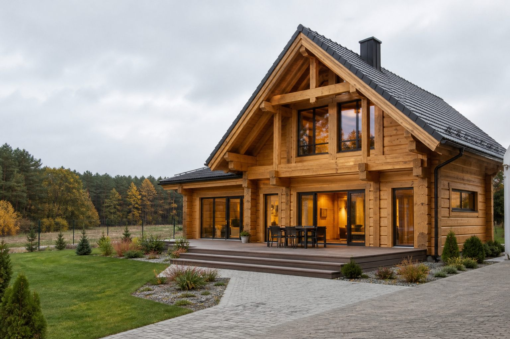
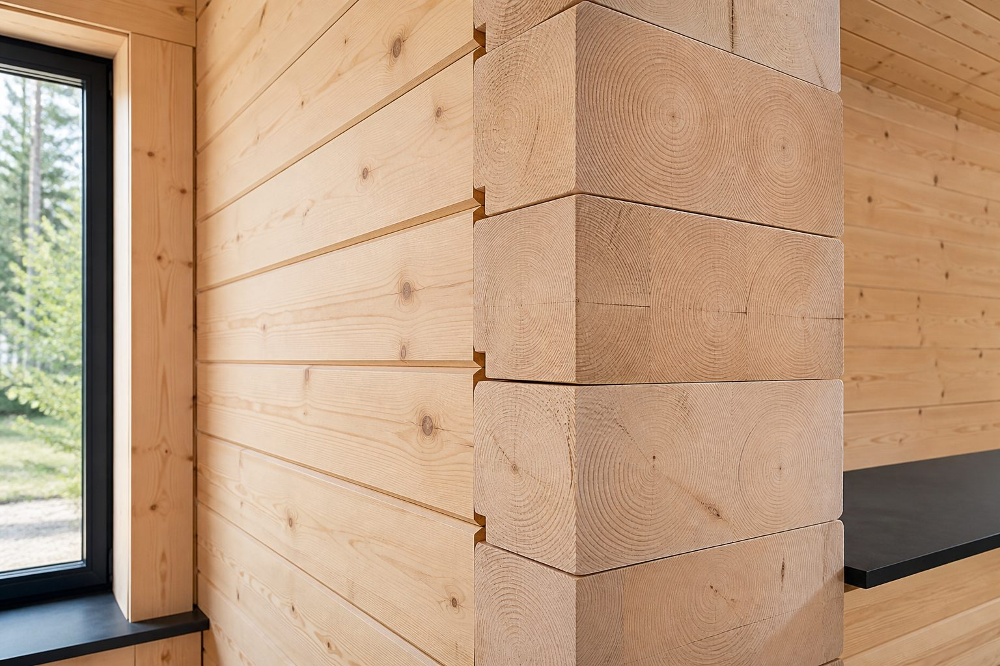

Rodziny za miastem
Dla rodzin, które chcą zamienić mieszkanie na własny dom z przestrzenią, tarasem i działką.
Landing page kampanijny
Sprawdź, czy dom z bala pasuje do Twojej działki, budżetu i terminu budowy. MASTERDOM projektuje i buduje całoroczne domy drewniane od ponad 15 lat.
Konsultacja bezpłatna. Bez zobowiązań. Rozmawiamy o działce, metrażu, budżecie i terminie.

Dla kogo
Dla rodzin, które chcą zamienić mieszkanie na własny dom z przestrzenią, tarasem i działką.
Dla osób, które szukają spokojnego, naturalnego domu na kolejne lata i chcą prostego procesu.
Dla właścicieli działek, którzy porównują dom drewniany z murowanym i potrzebują konkretów.
Dla osób, które chcą znać koszt, czas budowy i realny proces przed decyzją.
Koszt wysoko na stronie
Koszt domu z bala zależy od metrażu, projektu, zakresu prac, lokalizacji i standardu wykończenia. W pierwszej konsultacji sprawdzimy, jaki wariant ma sens dla Twojej działki, budżetu i terminu.
Cztery pory roku
Dobrze zaprojektowana ściana, odpowiedni materiał i poprawny montaż są ważniejsze niż sama wizja drewna. Dlatego rozmowa o technologii, izolacji i sposobie użytkowania zaczyna się przed wyceną.

Drewno wielu klientów przyciąga odczuciem ciepła, zapachem, spokojnym wnętrzem i kontaktem z naturą. Nie obiecujemy efektów medycznych. Pokazujemy, jak zaprojektować naturalne warunki do codziennego życia.
Zobacz, jak budujemy domy z naturalnego drewnaTaras, własna działka i przestrzeń przy domu zmieniają codzienność. To argument dla rodzin, które chcą wyjść z ograniczeń mieszkania i mieć miejsce na odpoczynek po pracy.
Zobacz projekty domów z balaBudowa domu to działka, projekt, zakres, budżet, formalności i wykonawca. Ta sekcja domyka decyzję: pokazuje, jak przejść od pierwszej rozmowy do projektu i wyceny.
Umów rozmowę o koszcie i terminiePorównanie
| Obszar | Mieszkanie / dom murowany | Dom z bala MASTERDOM |
|---|---|---|
| Przestrzeń | Ograniczony metraż i sąsiedzi za ścianą | Własny dom, działka i taras |
| Mikroklimat | Zależy od wentylacji i materiałów | Naturalny charakter drewna |
| Projekt | Gotowy układ albo ograniczone zmiany | Możliwość dopasowania projektu |
| Proces | Zależny od technologii i wykonawców | Rozmowa, projekt, wycena i budowa w jednym procesie |
| Styl życia | Miasto, blok, wspólne części | Spokój, natura i prywatność |
Projekty i metraże
Finalne projekty, zdjęcia i widełki kosztowe wymagają potwierdzenia MASTERDOM. Karty pokazują logikę wyboru.
4 pokoje. Dla rodziny, która chce przejść z mieszkania do własnego domu za miastem.
Można dopasować układ i taras Zapytaj o koszt tego układu5 pokoi. Wariant dla rodzin i klientów, którzy chcą więcej przestrzeni oraz wyraźny podział stref.
Wycena po konsultacji Zapytaj o koszt tego układu5-6 pokoi. Dla osób, które chcą budować raz, rozsądnie i z zapasem miejsca.
Zakres do ustalenia przed wyceną Zapytaj o koszt tego układuProces MASTERDOM
FAQ
Tak, jeśli jest dobrze zaprojektowany i wykonany z odpowiedniego materiału. W rozmowie trzeba ustalić izolację, zakres prac, ogrzewanie, montaż i sposób użytkowania domu.
Cena zależy od metrażu, projektu, zakresu, lokalizacji i standardu wykończenia. Aktualne widełki powinny zostać potwierdzone przez MASTERDOM przed publikacją.
Nie zawsze. Działka ułatwia konkretną wycenę, ale konsultacja może pomóc ocenić, jaki dom i zakres będą miały sens przed zakupem działki.
Tak, zakres zmian zależy od projektu, technologii i założeń budżetowych. Dlatego projekt warto omówić przed finalną wyceną.
Czas zależy od projektu, formalności, zakresu prac i harmonogramu. Na LP nie podajemy terminu bez aktualnego potwierdzenia po stronie MASTERDOM.
MASTERDOM działa w całej Polsce, z naciskiem na województwa mazowieckie, podlaskie i lubelskie oraz lokalizacje w promieniu do 250 km od Białej Podlaskiej.
Konsultacja
Zostaw kontakt. Wrócimy z rozmową o metrażu, lokalizacji, terminie i realnym zakresie budowy.